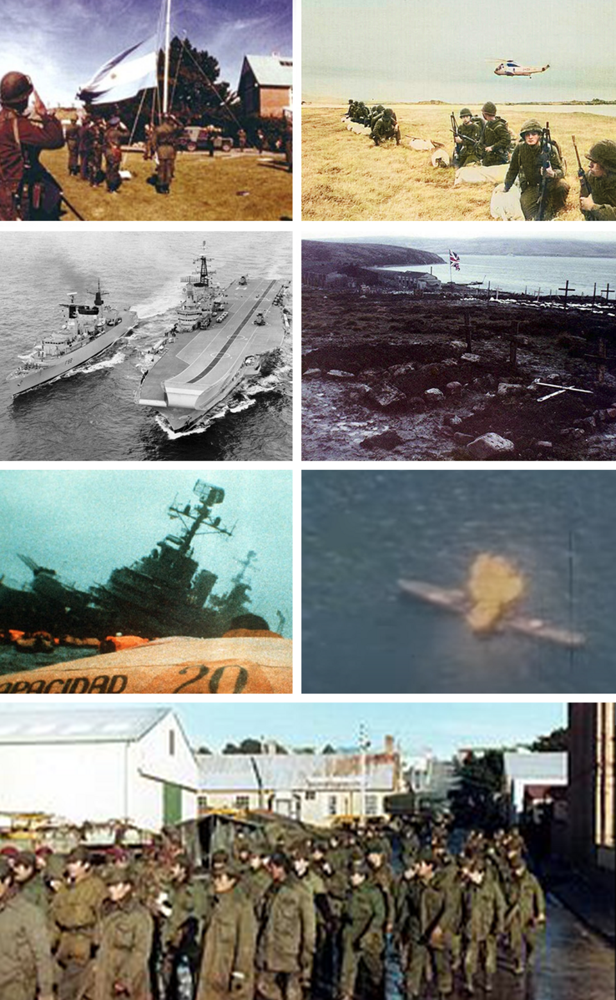

Tropas argentinas desembarcan en las Islas Malvinas y toman Puerto Stanley
Fuerzas de las tres armas ocuparon el archipiélago disputado desde 1833 y rindieron a la guarnición británica sin causarle bajas. Una multitud llenó la Plaza de Mayo; en Londres, la señora Thatcher convoca su flota.

El país amaneció con la noticia que ningún argentino esperaba para hoy y que todos, de un modo u otro, esperaban desde hace ciento cuarenta y nueve años: tropas nacionales desembarcaron esta madrugada en las Islas Malvinas y, tras reducir a los infantes de marina británicos apostados en la capital, izaron la bandera celeste y blanca. La operación, conducida con órdenes estrictas de no derramar sangre inglesa, costó sin embargo la vida del capitán Pedro Giachino, primer caído de la jornada. El gobernador militar designado prometió respetar la vida y las costumbres de los isleños.
La Plaza de Mayo, que hace apenas cuatro días fue escenario de una dura protesta sindical contra el gobierno del general Galtieri, se llenó hoy de una multitud que vivaba la recuperación de las islas. La causa Malvinas, enseñada en todas las escuelas y llorada en todos los mapas, es acaso la única bandera que este país agrietado comparte entera, y el gobierno militar, urgido de aire, lo sabe mejor que nadie. En los corrillos diplomáticos se asegura que el cálculo oficial descuenta una salida negociada: que Gran Bretaña, a doce mil kilómetros, no moverá su flota por unas islas que venía negociando con desgano.
El pleito es tan viejo como el país: en enero de 1833, una corbeta británica desalojó de las islas a la guarnición argentina, y desde entonces cada generación heredó el reclamo con el mapa de la escuela. En 1965, las Naciones Unidas reconocieron la existencia de la disputa y ordenaron negociar; en los años setenta se llegó a conversar sobre administraciones compartidas, y hasta hubo ministros británicos de visita con propuestas que los isleños y el Parlamento voltearon una y otra vez. La chispa final fue casi absurda: un contratista argentino que desmontaba una vieja factoría ballenera en las Georgias izó una bandera, Londres despachó un buque, y la escalada encontró a la Junta con los planes de recuperación ya dibujados y una crisis interna que pedía apuro.
El país se enteró desayunando: las radios interrumpieron la programación a la mañana, los diarios sacaron ediciones extraordinarias que volaron de los quioscos, y en las escuelas los directores improvisaron actos frente al mapa de las islas que todos los alumnos argentinos dibujan desde el primer grado. Los comunicados oficiales, numerados y con marchas de fondo, informan que la guarnición británica fue reducida sin causarle bajas y que los mil ochocientos isleños seguirán con su vida y sus costumbres, ahora bajo gobernador argentino. En la Plaza hubo lágrimas de viejos que no esperaban ver este día. Lo que ningún comunicado dice es lo que se pregunta en voz baja todo el que tiene un hijo de dieciocho años: qué pasa si la señora Thatcher no acepta el hecho consumado.
Las primeras señales de Londres no acompañan el pronóstico: la señora Thatcher reunió a su gabinete de urgencia, habla de agresión y anuncia el despacho de una fuerza naval de envergadura, mientras las Naciones Unidas se aprestan a exigir el retiro. Entre el júbilo de la plaza, algún viejo prudente recuerda que de las guerras se sabe siempre cómo empiezan y nunca cómo terminan. Quiera Dios que la diplomacia alcance antes que las escuadras, porque los muchachos que hoy pisan ese suelo helado son conscriptos de dieciocho años, y el invierno austral viene en camino.